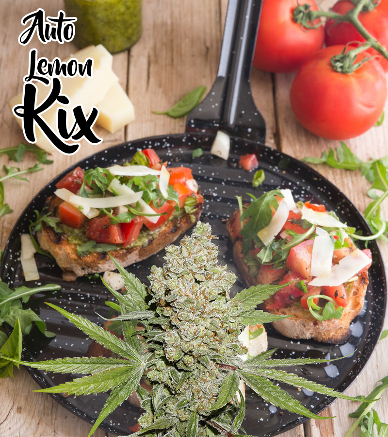

Bruschetta with pot pesto

This light and tasty starter is easy to make and a real crowd pleaser! If you have a spare, sunny day a Bruschetta is a perfect snack in the sun.
The sharp and savoury tastes of the Bruschetta with a THC rich pot pesto is complemented well by the terpene profiles of Auto Lemon Kix and Skywalker Haze.
The terpene profile of Auto Lemon Kix (shown below) provides some spicy flavours thanks to the high levels and combination of Terpinolene, Beta-Myrcene and Beta-Caryophyllene. Limonene and Ocimene help provide a fruity and citrus element to the terpene profile which fits well with this flavoursome dish.
By adjusting the strength of your THC infused olive oil you can vary the potency of the dish. Note that the psychoactive high can take a couple of hours to take effect with a cannabis edible, be careful not to keep eating and over-consume!
To make THC infused olive oil just leave some buds soaking in olive oil for a day or two. You will also need to apply some heat to the THC infused olive oil to convert the non-psychoactive THC-A into the psychoactive form THC. This takes around 30-40 minutes at 100ºC (220ºF).
This dish serves a couple of people and takes about 45 minutes to make.
Ingredients:
- 1 cup of THC infused olive oil (you decide the strength!)
- 4 walnuts
- 2 cups of Basil
- 2 cloves of garlic
- A pinch of salt
- 1/4 cup of grated parmesan cheese
For the bruschetta bread:
- a large loaf of ciabatta bread cut into thick slices
- 3 tablespoons of THC olive oil
- 3 small tasty tomatoes
Step-by-step guide:
- Preheat your oven to around 180ºC / 350°F.
- To make the pesto, warm a small pan over medium heat to toast your walnuts, stirring for 3-4 minutes. Then remove from the heat and allow to cool.
- Remove the flaky skins of the walnuts by rubbing them over a metal sieve or strainer.
- Use a food processor to grind the walnuts into a rough flour.
- Wash and dry the basil, remove the stems and shred the leaves into small pieces.
- Add the basil, garlic, salt, and Parmesan to the walnut flour in the food processor.
- While the processor is running, add ¾ cup of the THC olive oil.
- Add more salt or oil until you are happy with the texture.
- To make the bruschetta brush your bread slices with THC olive oil, then toast in the oven for 3 minutes on a tray until they are golden.
- Remove from the oven, and top each bread slice with the diced tomatoes, then return the budschetta to the oven for 5 minutes.
- Remove, top with the pesto and enjoy your dish!
Back to overview